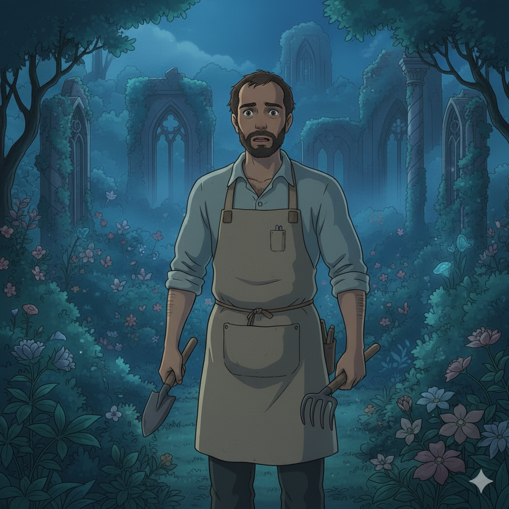

Sinopse da História
Victor tinha o jardim mais belo, mas escondia o "Jardim Secreto": um lugar sombrio de suas emoções e medos. Nesta palestra, aprendemos que a verdadeira saúde está na coragem de acolher e cuidar de todas as partes de nós.
O segredo, como disse a Sra Helena, é aceitar que o ciclo da vida inclui sombras. A chave é dar a cada parte de nosso jardim interno a atenção que ela merece.

Cultive o Seu Ser: Mente, Coração e Ações
Selecione um dos pilares abaixo para explorar como você pode começar a cuidar do seu próprio jardim interno hoje.
Mente (O Solo)
Coração (As Raízes)
Ações (Os Frutos)
Clique em um dos pilares para descobrir práticas e reflexões essenciais para o seu bem-estar emocional.